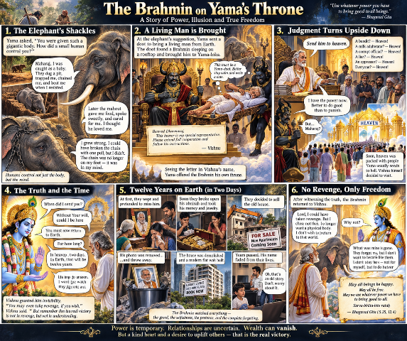

An elephant, a forged letter, and a single day of rule — a tale of how power quietly changes the one who holds it.
That day, Yamaraj's court was in session in the land of the dead. Souls arrived one after another, and Yamaraj listened as their lives were weighed and reckoned.
Just then, a Yamadoot brought in an enormous elephant.
Yamaraj looked the elephant over and said — "Well now! You were sent into the world with a body so vast, so how did you end up obeying a man? A man no taller than one of your legs, and that little creature made you go wherever he pleased?"
The elephant was quiet for a moment. Then it said —
"My lord, my body may be large, but my story begins in childhood."
Yamaraj said — "Let me hear it."
The elephant said — "When I was young, men set a trap for me. They dug a deep pit in the earth and covered it with leaves. I didn't notice. My foot landed on it, and I fell in."
"After that, they took me away. I was tied with rope, bound with chains. Whenever I tried to escape, I was beaten. I was young. I couldn't break the chains."
Yamaraj asked — "And the mahout?"
The elephant said — "Yes. At first the mahout tortured me. But later he brought me food, gave me water, ran his hand over my head. When I fell ill, he cared for me. I thought — this man loves me."
The elephant paused.
"But my lord, alongside that love, he always carried the goad of control. I grew larger. One day I realised — the chain that once bound me as a calf, I could now snap with a single pull."
Yamaraj said, astonished — "Then why didn't you break it?"
The elephant lowered its head.
"Because by then, the chain was no longer on my leg."
Yamaraj said — "Then where was it?"
The elephant said slowly — "In my mind."
The court fell silent.
The elephant said — "My lord, men had not bound my body — they had bound my belief. And men don't only do this to elephants. They bind each other too, with the fears of childhood, with habit, with greed, with the chains of society."
Yamaraj sighed.
The elephant smiled faintly. "Everyone who comes to you here is already dead. Bring a living man here just once. Then you'll understand how dangerous a man can be."
At once, Yamaraj ordered the Yamadoot — "Go. Bring me a living man from the earth."
The Yamadoot descended to earth. After a long search, on a hot night, he found a Brahmin asleep on a cot on his rooftop. The Yamadoot lifted the Brahmin, cot and all.
Halfway there, the Brahmin woke. He opened his eyes to find himself flying through the sky — a strange, otherworldly figure carrying him and his cot on its shoulder. The Brahmin understood at once: this was a Yamadoot. But he didn't scream.
He thought — "If I shout now and fall off this cot, my business will be finished before I even reach the land of the dead."
He took out paper and a pen from his pocket, scribbled something quickly, tucked the paper away again, closed his eyes, and lay back down. The Yamadoot noticed nothing at all.
At dawn they reached the land of the dead. The Yamadoot set the cot down. The Brahmin rose, drew a letter from his pocket, and said —
"Give this to Dharmaraj."
Yamaraj opened the letter. It read —
"Dear Dharmaraj, the bearer of this letter is my special envoy. Assist him in your administrative affairs and carry out his instructions. — Vishnu"
Yamaraj read the letter and froze. Vishnu's own name! He rose hastily from his throne and said —
"Please, sir! Do sit upon the throne."
The Brahmin walked slowly to the throne and sat down. The elephant watched everything from a distance, and thought to itself —
"Men really are something else."
The Yamadoot brought in a bandit.
"My lord, he has robbed countless people and killed several."
The Brahmin said — "Send him to heaven."
The Yamadoot froze. "To heaven?"
"Yes. Next."
Then came a man who had sold adulterated milk — "He has made many people ill." "Send him to heaven."
Then a false witness — "He has framed many innocent people." "Send him to heaven."
A corrupt official — "Heaven." A bribe-taker — "Heaven." A cruel landlord — "Heaven." A merchant who cheated his customers — "Heaven."
By the end, the Yamadoot stopped asking questions altogether. He simply brought the files. And the Brahmin kept saying — "Send him to heaven."
Yamaraj stood by, helpless. After all, the letter carried Vishnu's own command.
Meanwhile, a queue had formed at heaven's gates. The gods were bewildered. Narada rushed to Vishnu and said —
"My lord! I have never seen such a crowd at heaven's gates!"
Vishnu said — "Who are they, all these arrivals?"
Narada said — "Those who, by rights, ought never to reach heaven at all."
Vishnu, astonished — "Coming from where?"
"From the land of the dead."
Vishnu said — "Then I must go there myself."
Vishnu arrived in the land of the dead to find Yamaraj standing aside while a Brahmin sat upon his throne.
Vishnu said — "Dharmaraj, what is going on here?"
Yamaraj said — "My lord, I have done nothing. The man you sent is making every decision."
Vishnu turned to the Brahmin. "When did I ever send you here?"
The Brahmin said — "My lord, could I possibly be here without your will?"
Vishnu said — "But I never wrote this letter."
The Brahmin said — "Your name is on it. Surely nothing could be done in your name without your consent!"
Vishnu smiled faintly. "Why are you sending everyone to heaven?"
The Brahmin said — "Because power has come into my hands."
"And power means setting everyone free?"
"No. But if power comes to me for only a short while, I would rather use it to do someone good than to cause someone pain."
Vishnu fell silent.
The Brahmin went on — "Before a man sits in the chair, he says, 'I will serve.' Once he sits in the chair, he says, 'Nothing happens without my permission.' And once the chair is taken from him, he says, 'No one ever gave me a chance.'"
The elephant burst out laughing. Yamaraj hid a smile too.
Vishnu said — "You must return to earth."
The Brahmin said — "For how long?"
Vishnu said — "Two days of heaven."
The Brahmin said — "And after that?"
Vishnu said — "You will return to earth."
But Vishnu had not yet told him — two days in heaven are twelve years on earth.
The second day in heaven came to an end. Vishnu made the Brahmin invisible and sent him back to earth. On earth, twelve years had already passed.
The Brahmin went to his own house. No one could see him. At first he watched his family weeping for him. But soon, beneath that grief, a different conversation began.
His son said — "We need to open Father's cupboard."
His daughter-in-law said — "We ought to see how much money is there."
His daughter said — "The jewellery will need to be divided too."
The Brahmin stood frozen.
Then he watched — the cupboard's lock being broken. Money coming out. Gold jewellery coming out. Old papers scattering across the floor. The man who had saved a lifetime for his family — in his very absence, the division of his estate had already begun.
But outside, in front of the neighbours — tears in his son's eyes, weeping on his daughter-in-law's face.
His daughter was saying — "We don't know where Father has gone! We only wish he would come back to us, even once."
The Brahmin heard it all. But no one knew that their father was standing right beside them.
Then one day his son said — "What's the use of keeping this old house? I've already spoken to a developer."
The Brahmin startled. "My house?"
The house was torn down. The rooms where his children had grown up were levelled to the ground. A multi-storey building rose in its place. Then the flats were sold. The money was divided. Years passed.
One day the Brahmin heard his grandson ask — "Father, what was our grandfather like?"
His son fell quiet for a moment, then said — "That's all old business now. What's the use of dwelling on it?"
The Brahmin understood then — the people had forgotten him. Only his property, they had not forgotten.
The invisible Brahmin now held a strange power. He could shut the doors of the house. He could throw open the cupboard. He could scatter the money to the winds. He could visit his family's dreams at night and fill them with fear. If he wished, he could turn their lives upside down.
One night he stood before his son. His son sat at a table, counting money. The Brahmin raised his hand.
For a moment he thought — "Let me scatter all this money."
Then he lowered his hand.
He thought — "If I take my revenge, then what separates me from them?"
He looked up at the sky and called out — "Lord Vishnu!"
Vishnu appeared before him.
"Come back."
The Brahmin said — "I am ready."
Back in the land of the dead, Vishnu said —
"I can give you a new body now. You may be born on earth again."
The Brahmin shook his head. "No, my lord."
"Why not?"
"I went to earth once with a body. Once I was without one, I understood that people can live on perfectly well without me. What would be the use of going back with a body again?"
Vishnu said — "Have you forgiven your family?"
The Brahmin said — "I don't know if I've forgiven them. But I no longer wish them any harm."
Vishnu smiled gently. "Then you have truly changed."
The elephant, standing nearby, said — "My lord, do you understand now what I meant?"
Yamaraj said — "What did you mean?"
The elephant said — "My chain was on the outside. Later, it moved into my mind. And this Brahmin's chain was woven from family, from property, from the wish for revenge. But in the end, he broke every one of his chains."
Vishnu said — "The strength of the body is not what matters. The true strength is in conquering one's own greed, one's anger, one's desire for revenge."
The Brahmin looked back at the earth one last time. His old house was gone. The photographs were gone. The cupboard was gone. The money was gone. The jewellery was gone. Even his own name had nearly vanished. And yet, this time, there was no sorrow left in his heart.
He said — "Everything that was ever mine was only ever temporary. Now I wish for only one thing — the welfare of every living being."
Vishnu looked at him and said — "Sarvabhuta-hite ratah — the good of all beings. That is the truth you have finally understood."
From a distance, the elephant smiled. "My lord, may I go to heaven now?"
Yamaraj said — "You were worthy of heaven long, long ago!"
The elephant said — "So you no longer hold any anger toward men?"
Yamaraj laughed. "No. Though I shall never again bring a living man here to test him!"
Everyone laughed together. And the Brahmin walked slowly toward the light, at Vishnu's side.
On earth, he lost his house. But in the end, he never let himself lose his own mind. That was his greatest victory.